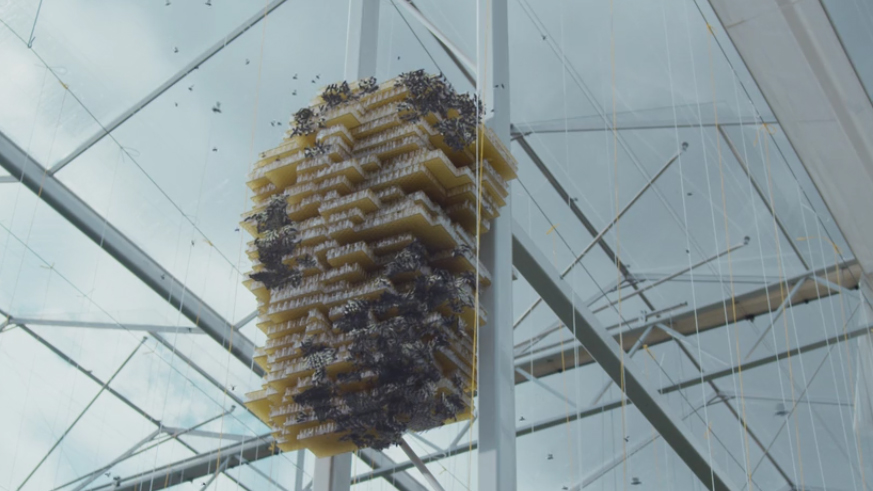
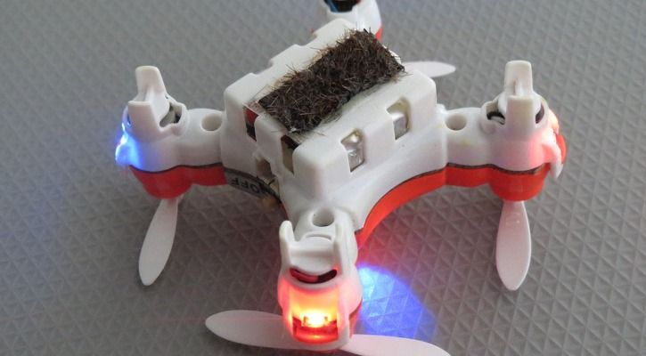

|
|---|
SinopsisEn un futuro cercano en Londres, la detective de la policía Karin Parke y su nueva compañera de trabajo experta en tecnología Blue Coulson, investigan una cadena de misteriosas muertes que tienen algo en común: la problemática relación de las víctimas con las redes sociales, en las que han sido el blanco de las crítcas durante sus últimos días de vida. NecesidadesEl capítulo transcurre en un futuro cercano similar al actual, aunque con una diferencia fundamental: varias especies de animales se han extinguido o están en proceso. Es el caso de las abejas, cuya inminente desaparición lleva a la necesidad de crear un sustituto robótico para las mismas que evite el desastre medioambiental anunciado. Además, en convivencia con la tecnología de hoy en día fácilmente reconocible (smartphones, ordenadores, domótica…), podemos encontrar algunos dispositivos nuevos o una evolución de los existentes, orientados a modernizar, facilitar y refinar la experiencia de uso de estos, como es habitual en el desarrollo de la tecnología. Dispositivo (Interfaz/tecnología):ADI (Dron Insecto Autónomo)Primera Aparición:0:03:35Necesidad:Sustituir a las abejas casi extintas en su función de polinización. Dado que son necesarias una gran cantidad de ellas para cubrir todo el territorio, son autónomas: funcionan con energía solar, se autoreplican y están dotadas de sensores que les permiten orientarse y detectar la flora. Además, son utilizadas como fuente de información para el gobierno, estando dotadas de un sistema de reconocimiento facial.
Dispositivo (Interfaz/tecnología):Ordenadores y móviles con tecnologías avanzadasPrimera Aparición:0:15:27Necesidad:Orientados a facilitar y dinamizar la interacción de los usuarios con los mismos. Sus pantallas translúcidas permiten visualizar la información mostrada por la pantalla tanto por el anverso como por el reverso de esta, facilitando el compartir información con una persona situada frente a la usuaria del dispositivo, ideal para un entorno de trabajo cooperativo como es el de los policías que protagonizan el capítulo. También constan de tecnología que posibilita la interacción física entre los dispositivos (0:36:05), acelerando procesos como el del intercambio de número de teléfono sólo con poner los smartphones en contacto.
Dispositivo (Interfaz/tecnología):Colmenas para los ADIPrimera Aparición:0:30:32Necesidad:Sirven de punto de replicación/reproducción para los ADI permitiéndoles multiplicarse exponencialmente y cubrir el país. Además, actuan como repetidores que permiten la comunicación con los ADI para su control.

Dispositivo (Interfaz/tecnología):Sistema de geolocalización para los ADIPrimera Aparición:0:34:26Necesidad:Fundamental para mantener un control en tiempo real y de gran precisión sobre un proyecto tan importante como costoso: los ADI. Permite un seguimiento total y la localización y representación gráfica de esta tanto en mapas 2D como 3D.
Dispositivo (Interfaz/tecnología):Coches autónomosPrimera Aparición:0:43:51Necesidad:Pensados para que sus usuarios puedan realizar otras acciones mientras se desplazan. Además, el utilizado por los policías protagonistas consta de un ordenador integrado conectado a la red de la policía que les permite trabajar de camino al lugar del proceso además de proporcionales funcionalidades como hacer que todos los semáforos de la ruta estén en verde al llegar a ellos, llegando así más rápido a su destino sin alterar el tráfico.
Tecnologías involucradasSe presenta un futuro cercano con un ‘ecosistema tecnológico’ que, aunque con ciertas diferencias, resulta bastante similar al actual. Esta limitación viene dada por la intención de los creadores de acercar el drama social a los espectadores, evitando una gran cantidad de estímulos que les distraigan de aquello que pretende ser el leitmotiv del capítulo: la incidencia de las redes sociales en la vida tal y como la conocemos. Esto supone la aparición de una gran cantidad de dispositivos ya desarrollados y de uso generalizado en la sociedad actual, así como otros nuevos que o bien están en desarrollo o bien se cuenta con la tecnología para su creación en los próximos años o décadas. Tecnologías disponibles en el momento de la producciónEn el 2016, año de producción de la película, se cuenta o se están investigando la mayoría de las tecnologías presentadas en el capítulo. Tanto es así, que de algunas ya contamos con versiones tempranas o perfectamente funcionales pero no tan avanzadas. Es el caso de los drones cada vez más extendidos hoy en día y que podrían ser el primer paso para crear algo parecido a los ADI [1], así como los sistemas de reconocimiento facial que estos utilizan, actualmente refinados hasta el punto de ser introducidos como métodos seguridad en dispositivos como el iPhone X [2]. Otro ejemplo son los coches autónomos Waymo de Google, que actualmente se encuentran en fase de pruebas en situaciones reales (circulación en vía pública) [3]. También existen gran cantidad de sistemas de geolocalización para distintos propósitos y repetidores de información que serían la base de las antes mencionadas colmenas. Lo mismo ocurre con la interacción física entre dispositivos, que en la actualidad lucha por generalizarse a través de la tecnología NFC.
Tecnologías imaginadas en el momento de la producciónAunque la mayoría de las tecnologías presentadas pueden resultar cercanas a la actualidad, cabe destacar la complejidad de los ADI, que presentan una mayor distancia respecto de los dispositivos de hoy en día sobre todo en lo que se refiere a su completa autonomía, a su avanzado sistema de razonamiento y a la capacidad de autoreplicación (pueden crear otros ADI idénticos a ellos y listos para funcionar), resultando el concepto de estos dispositivos algo realmente disruptivo. Así, los ADIs, al menos como aparecen planteados en el capítulo, suponen un nivel de complejidad demasiado alto para ser sustentados por la tecnología actual.
ImpactoAl tratarse de un capítulo estrenado en 2016, es difícil estimar el impacto que este pueda llegar a tener en el desarrollo de nuevas interfaces o tecnologías, aunque es posible que veamos dispositivos similares a los presentados en esta historia en un futuro próximo. Cabe destacar que, desde 2007, en el Instituto Nacional de Ciencia y Tecnología Industrial Avanzada (AIST) de Tokyo [4], están trabajando en polinizadores artificiales basados en micro-drones, aunque de concepto mucho más modesto que los ADIs y con una interfaz mucho menos sofisticada, lo que hace pensar que no sería de extrañar la implementación de algunas de las tecnologías mostradas sobre estos dispositivos en el episodio. Referencias
|
|||||||||||||||
|---|---|---|---|---|---|---|---|---|---|---|---|---|---|---|---|